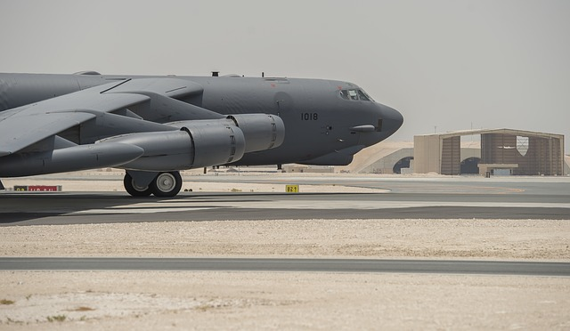

I am a Cyber Transport Technician in the United States Air Force. I spent my first year doing network technician work, but I quickly demonstrated that I was capable of taking on more responsibility. I stepped into the role of the Production Control Manager and now serve as the point of contact for all Network issues for about 18,000 military and civilian personnel on Barksdale Air Force Base. I have experience with programming and managing Cisco and Juniper switches and routers, as well as configuration and installation of VoIP and analog phones. My time in the Air Force has allowed me to get my hands on a wide variety of different technology and let me explore different IT career fields, and has been an invaluable experience.
Technologies I work with:
- Routers/Switches
- Cisco routers
- Cisco layer 3 switches
- Juniper layer 3 switches
- VoIP telephony
- Cisco
- General Dynamics
- Avaya
- Analog telephony
- Legacy communication devices
- Long-haul circuits
- Layer 3 Encryption Devices